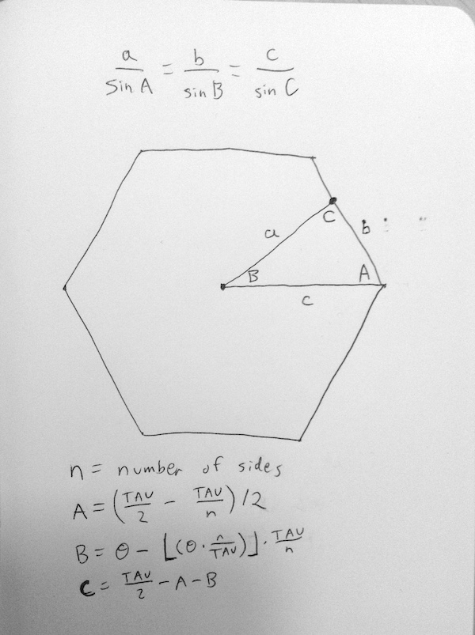

Problems like this often come up when making "UI toys" (which is how it came up for Andy, according to the tweet stream). Although finding an analytical solution is an interesting math problem, really the goal is just to get an implementation working, so Andy can see it on a screen and "feel it out".
In these situations, instead of writing pages of math searching for a closed form solution, I find this alternative strategy super helpful: just get the computer to solve it for you. Since you can formulate this as a minimization problem, you can ask the computer to use numerical methods to find you a minimum.
To do this you just need to write a function (called an objective) that takes some number parameters (the degrees of freedom of the problem) and returns a number (to minimize). In this case, the inputs are the center x and y of the polygon and the angle that the polygon is rotated, and the output is the radius of the polygon that encloses all the points.
Then, you hand off your objective function and an initial guess to a minimization algorithm. That algorithm then employs some form of gradient descent to iteratively perturb the initial guess until it finds the minimum. The choice of minimization algorithm isn't too important. I use numeric.js's uncmin which I think is a JS version of some Fortran algorithm from the 80s.
Note that this is generally super fast on modern computers.
For more details, please first see my solution (with annotated code) to the simpler problem of finding a circumscribing circle. Then check the source code for this page.
The n-gon requires some extra trigonometry, which is a bit challenging but totally tractable, unlike figuring out a full analytical solution to the problem. This is left as an exercise for the reader, but here is the figure I used (the letters are referenced in the source code for this page).

The polygon is a little bit trickier than the circle because you can get stuck in a local minimum if a corner gets "stuck". Gradient descent algorithms only find a local minimum, not the global minimum. They "roll down the hill" until they find a flat part, but there may be even lower flat parts in areas of the parameter space that they never got around to exploring. For the circle, there is only one local minimum, the global minimum, so the algorithm always finds this without a hitch. But since the polygon problem has local minima, I run the minimization algorithm 20 times with random initial guesses and take the best result. This seems to work, but could be adjusted depending on the tradeoffs of the application.